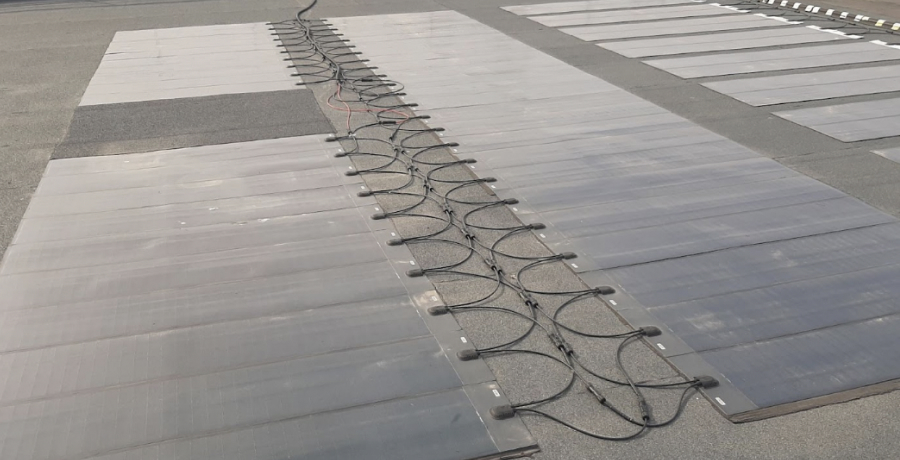
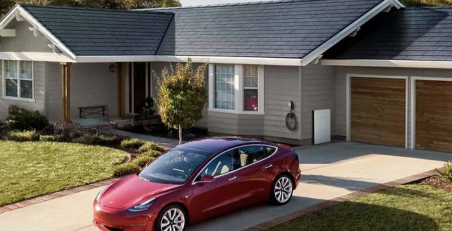
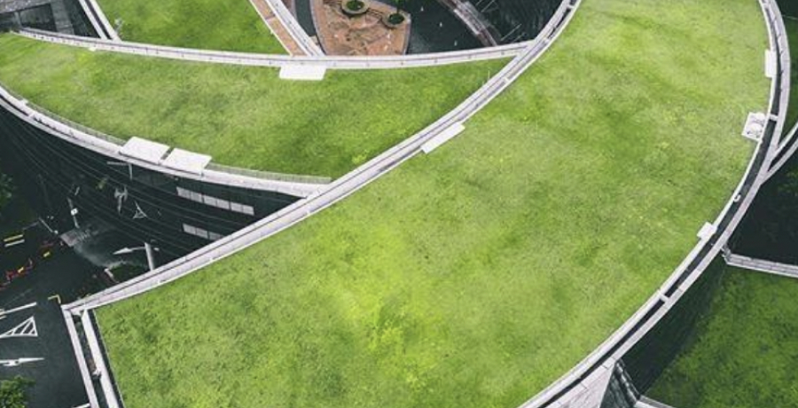
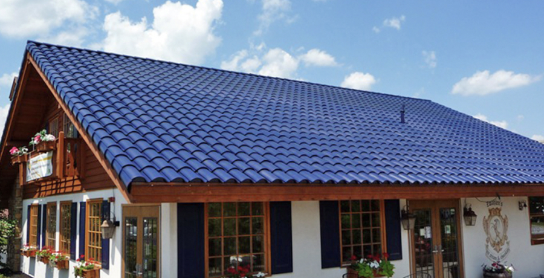
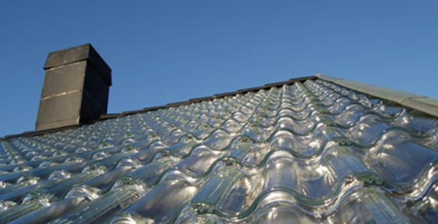

Современные крыши постепенно становятся больше, чем просто защитой от ветра и влаги. Они превращаются в умные механизмы, которые могут снабжать дома теплом и электричеством, регулировать температуру внутри и выполнять еще множество полезных функций.
Рассказываем про тонкопленочные панели, стеклянную черепицу от Tesla, плитку, которая ловит ветер, и другие современные передовые решения.
В отличие от кристаллических панелей, тонкопленочные с использованием аморфного кремния намного более гибкие и эластичные. К тому же они в 10 раз легче. Благодаря этому их можно размещать на любых поверхностях: крышах, окнах и даже одежде. Например, в Европе во время сильной жары велогонщики крепят панели на спинке куртки или на рюкзаке, чтобы заряжать от них телефон.
Еще одно преимущество – высокая производительность даже при рассеянном свете. В пасмурную погоду тонкопленочные солнечные батареи генерируют на 10–20% больше энергии, чем кристаллические. Поэтому в регионах, где чаще облачно, чем солнечно, крыша с тонкопленочными панелями все равно будет снабжать дом электричеством.
Посмотрите на фото ниже: такие панели на крышах во Фрайбурге-им-Брайсгау производят больше энергии, чем потребляет поселок из 59 домов. Со временем они окупают свою стоимость и компенсируют затраты на установку.
Толщина модулей – всего 2 мм, а еще они могут достигать 20% прозрачности. Благодаря этому тонкопленочные панели выглядят как слой кровли и органично вписываются в любые дизайнерские решения по отделке здания.
В России тонкопленочные солнечные панели тоже используют. Например, они установлены на крыше производственной площадки «Технониколь» в Рязани.
Внешне солнечные панели Tesla Solar Roof выглядят практически как обычная кровля, но при этом вырабатывают электроэнергию для дома и умеют быстро очищаться даже после сильного снегопада. Они постоянно выделяют небольшое количество тепла, благодаря которому снег подтаивает и сам соскальзывает с покатой крыши.
Кроме того, что такая крыша «работает» и в солнечную, и в пасмурную погоду со снегом, она очень прочная. Солнечные панели покрыты стеклянной черепицей, поэтому им не страшна наледь и ничего не сделают ветки деревьев по соседству.
Такая кровля состоит из гидроизоляционного слоя, корневого барьера, дренажной системы и питательной среды для растений. Благодаря гидроизоляции не нужно волноваться, что во время полива влага просочится в здание: ухаживать за зелеными крышами можно как и за обычными парками.
Они могут выполнять разные функции: экономить пространство, быть зоной отдыха, восполнять запасы кислорода в воздухе, украшать городские пейзажи, собирать воду и так далее. А могут совмещать их все. Яркий пример – здание Nanyang Technological University в Сингапуре.
Изогнутая зеленая крыша пятиэтажного здания прекрасно сочетается с окружающим ландшафтом, дает студентам пространство для отдыха, а еще сама собирает дождевую воду, чтобы поливать все эти насаждения.
Она выглядит как привычная черепица из глины или цемента, но выполняет гораздо больше функций. Тонкопленочная солнечная технология позволяет преобразовывать больше света в электричество, а форма плитки дает воздуху свободно проникать под панели. Он будто течет под кровлей, снижая потребность здания в охлаждении.
Solé Power Tile состоит из модулей, поэтому ее легко монтировать даже самостоятельно. Кроме того, при желании можно установить такие панели только на часть крыши, которая обращена к солнцу, а остальное оформить обычной черепицей.
Стеклянная черепица, разработанная шведской компанией SolTech Energy, визуально похожа на лед. Ее особенность в том, что она снабжает дом не только электричеством, но и теплом.
Крыша использует солнце, воздух и воду для того, чтобы обеспечить дом электроэнергией и теплом в зимний период. Стеклянная черепица ловит свет и нагревает черное нейлоновое полотно под собой. Оно передает тепло воздуху, который циркулирует под крышей. Часть воздуха расходится по дому, а часть нагревает воду в специальном резервуаре, из которого она течет по батареям.
Поскольку система запасает тепло в изолированных слоях воздуха, все отлично «работает» даже ночью или в сильный снегопад.